AI שעונה מהידע של העסק: RAG ב-Make, ו-Claude Desktop
היום בונים "עוזר ידע" אמיתי: הלקוח שואל, Make מחפש במאגר של "בית ועיצוב", ו-Claude עונה רק ממה שנמצא — עם מקור. ואז רואים איך Claude Desktop עושה את אותו דבר, ועוד הרבה, בלי לבנות כלום.
בסוף המפגש תדעו…
מה נעשה היום
מה Claude יודע על "בית ועיצוב"?
🤖 "בדרך כלל משלוח עולה בין 100 ל-300 ₪, תלוי בגודל…"
זה ניחוש. Claude לא מכיר את החנות. הוא נותן תשובה שנשמעת נכונה.
🤖 "משלוח לחיפה עולה 149 ₪ להזמנה עד 5,000 ₪, ומשלוח חינם להזמנה מעל 5,000 ₪. [מקור: מדיניות משלוחים, סעיף 1]"
זו תשובה אמיתית מהרצה שלנו.
RAG: קודם מחפשים, אחר כך עונים
Retrieval-Augmented Generation — שם מפחיד לרעיון פשוט.
שלושה שלבים
שלוש דרכים לתת ל-AI ידע
| רמה | איך | מתאים ל | החולשה |
|---|---|---|---|
| 1 · הכול בפרומפט | מדביקים את כל הידע בפרומפט | עד כמה עשרות עמודים (הקטלוג במפגש 8) | יקר כשהמאגר גדל |
| 2 · חיפוש לפי מילים | AI מוציא מילת מפתח ← חיפוש בגיליון ← רק התוצאות לפרומפט | מאגר של עשרות–מאות קטעים · מה שנבנה היום | "ספה" לא מוצא "Диван" |
| 3 · חיפוש לפי משמעות | Embeddings + מסד וקטורים | אלפי מסמכים, שאלות חופשיות | צריך מפתחות API, שירות נוסף, ועלות |
Embeddings: חיפוש לפי משמעות
"ספה" ✅ · "ספות" ❌ (אם לא כתוב) · "Диван" ❌ · "משהו לשבת עליו בסלון" ❌
"ספה" ≈ "ספות" ≈ "Диван" ≈ "משהו לשבת עליו בסלון" ✅
מאגר הידע של "בית ועיצוב"
25 קטעי ידע: משלוחים, החזרות, אחריות, תשלומים ועוד. וכמו בעסק אמיתי — לא נקי.
שורה = קטע ידע אחד
| עמודה | מה בה | למה |
|---|---|---|
| id | K-01, K-02… | כדי לדעת בדיוק מאיפה הגיעה תשובה |
| topic | משלוחים, החזרות… | נושא — גם עליו מחפשים |
| keywords | משלוח, משלוחים, הובלה, דמי משלוח… | המילים שלקוחות משתמשים בהן. כאן החיפוש עובד |
| text | 2–3 משפטים, עובדה אחת | מה ש-Claude יקרא |
| source | "מדיניות משלוחים, סעיף 1" | הציטוט בתשובה |
| updated | תאריך עדכון | כשיש סתירה — החדש מנצח |
מורידים, ומייבאים ל-Google Sheets
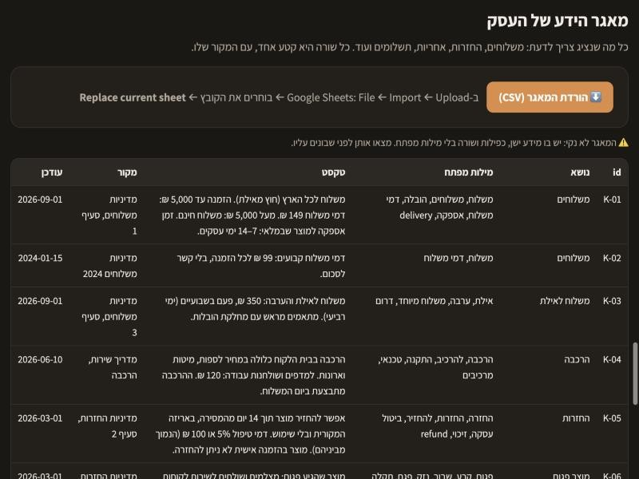
- באתר: מאגר הידע ← ⬇️ הורדת המאגר (CSV)
- Google Sheets ← גיליון חדש ← File · Import · Upload ← בוחרים את הקובץ
- Import location: Replace current sheet ← Import data
- משנים את שם הלשונית ל-ידע (כך נמצא אותה ב-Make)
=IMPORTDATA("https://weizmann.ai/demo/knowledge.csv") ← Allow access. הגיליון יתעדכן לבד כשהקובץ באתר משתנה. כך בנינו את הגיליון בהדגמה.המאגר אחרי הייבוא

ארבע בעיות שמסתתרות במאגר
| שורה | הבעיה | מה יקרה בלי ניקוי | הפתרון |
|---|---|---|---|
| K-02 | מדיניות 2024: משלוח 99 ₪ — סותר את K-01 (149 ₪) | AI עלול לצטט מחיר ישן | מוחקים, או מסמנים "בוטל" |
| K-21 | שעות פתיחה ישנות (עד 13:00) — כפילות של K-10 (עד 14:00) | שתי תשובות שונות לאותה שאלה | מוחקים את הישנה |
| K-25 | מבצע חנוכה — בלי מילות מפתח | חיפוש לפי keywords לא ימצא אותו | מוסיפים: מבצע, הנחה, חנוכה |
| עמודה F | תאריכים הפכו למספרים (46235) | "עודכן: 46235" בתשובה ללקוח | Format ← Date |
המאגר מוכן 📚
הפסקה — 10 דקות
כשחוזרים: בונים את עוזר הידע ב-Make, מודול אחרי מודול.
בונים את עוזר הידע
שישה מודולים. כל אחד — מסך ההגדרות, ומה יצא ממנו בהרצה אמיתית.
שישה מודולים, שאלה אחת, תשובה עם מקור
| # | מודול | תפקיד ב-RAG |
|---|---|---|
| 1 | Custom webhook | השאלה נכנסת |
| 2 | Simple Text Prompt | מילת מפתח מהשאלה |
| 3 | Google Sheets · Search Rows | שליפה — הקטעים הרלוונטיים |
| 4 | Tools · Text aggregator | מאחד את הקטעים לטקסט אחד |
| 5 | Simple Text Prompt | תשובה — רק מהקטעים, עם מקור |
| 6 | Webhook response | התשובה חוזרת למי ששאל |
Custom webhook: השאלה נכנסת
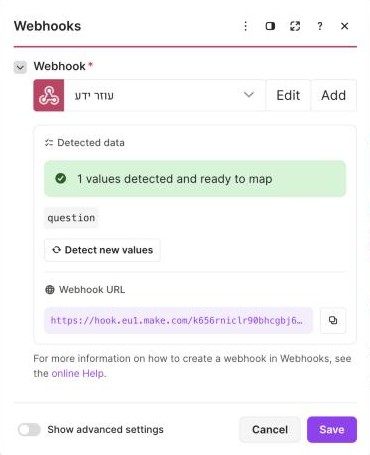
{"question": "כמה עולה משלוח לחיפה?"}Make לומד שיש שדה question, ומעכשיו הוא בועה.
Claude מוציא מילת מפתח אחת מהשאלה
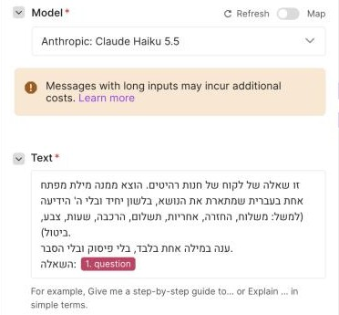
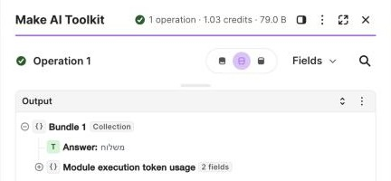
Search Rows: מחפשים את מילת המפתח במאגר
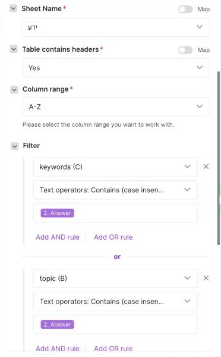

Text aggregator: ארבע שורות ← טקסט אחד
![Source Module: Search Rows · Row separator: New row · Text: [id] topic: text (מקור: source, עודכן: updated)](../assets/s09/rag-aggregator.jpg)
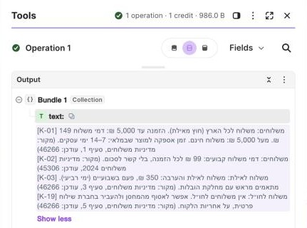
Claude עונה רק מהקטעים, עם מקור
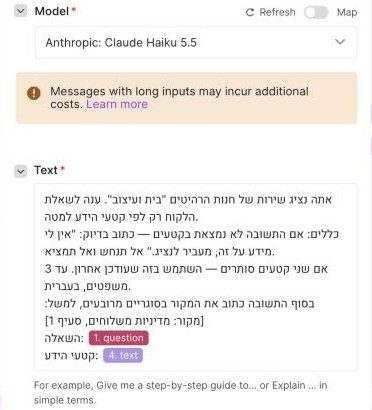
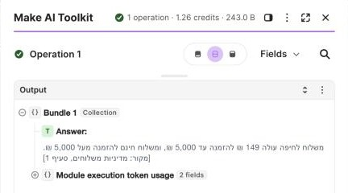
Webhook response: התשובה חוזרת לשואל
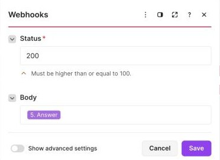
זמן כולל בהדגמה: כ-6 שניות.
השאלה הרגילה
שאלה שאין לה תשובה במאגר
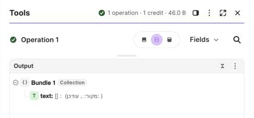
שאלה ברוסית — ובכל זאת נמצא
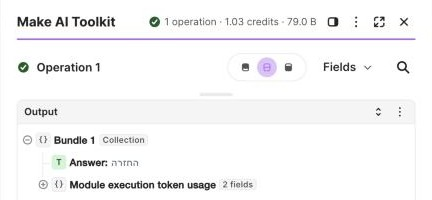
שתי שורות סותרות — מה Claude עושה?
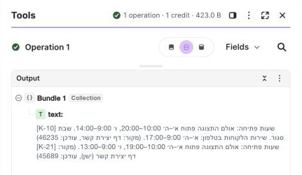
כמה עולה תשובה?
| מודול | קרדיטים (מההרצה) |
|---|---|
| Webhook + Webhook response | ~2 |
| Simple Text Prompt · מילת מפתח | 1.03 |
| Search Rows + Text aggregator | 1 + 1 |
| Simple Text Prompt · תשובה | 1.26 |
| סה"כ לשאלה | ~6 |
יש לנו עוזר ידע 🤖
הפסקה — 10 דקות
כשחוזרים: Claude Desktop — RAG מוכן, ועוד הרבה.
Claude Desktop: עוזר שעושה עבודה
מה שבנינו ב-Make בשעה — ועוד דברים שאי אפשר לבנות שם. כל המסכים צולמו ב-claude.ai (אותם מסכים באפליקציה).
מתי Make, ומתי Claude Desktop?
| המצב | הכלי |
|---|---|
| תהליך קבוע שרץ לבד, בלי אדם, על כל ליד/שאלה | 🟣 Make |
| לקוחות פונים ומקבלים תשובה (בוט, טופס) | 🟣 Make (עם RAG) |
| אני עובד מול המחשב ורוצה עוזר חכם על הידע שלי | 🟠 Claude · Projects |
| משימה שחוזרת — אבל דורשת שיקול דעת וכתיבה | 🟠 Claude · Skills + משימות מתוזמנות |
| לעבוד על קבצים במחשב (לסדר, לסכם, ליצור דוחות) | 🟠 Claude · Cowork |
| רוצה להפעיל את התרחישים שלי מתוך שיחה | 🟣+🟠 Make כמחבר ב-Claude |
יוצרים פרויקט
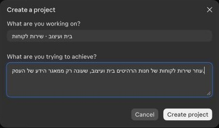
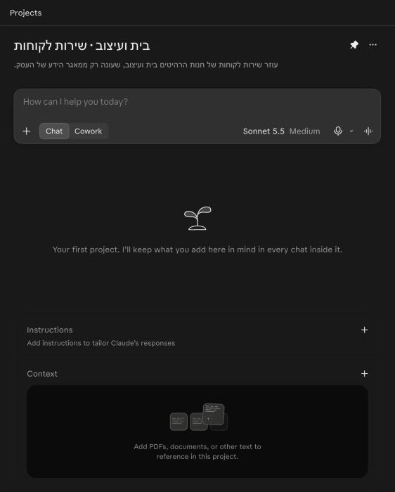
הוראות, ואיך מוסיפים ידע
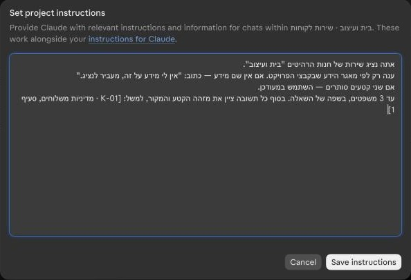
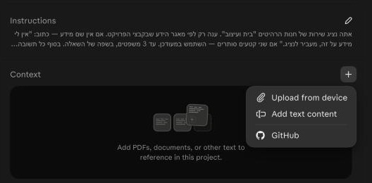
מוסיפים את המאגר
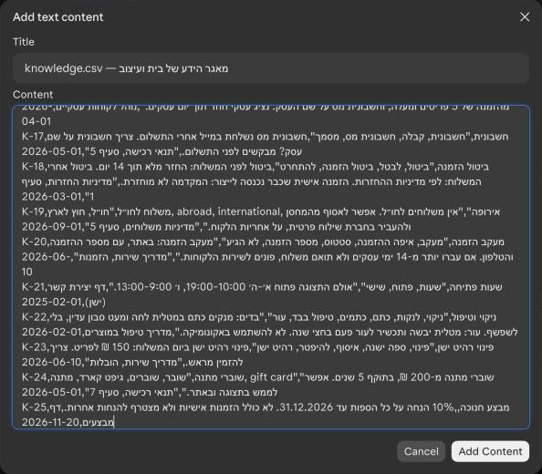
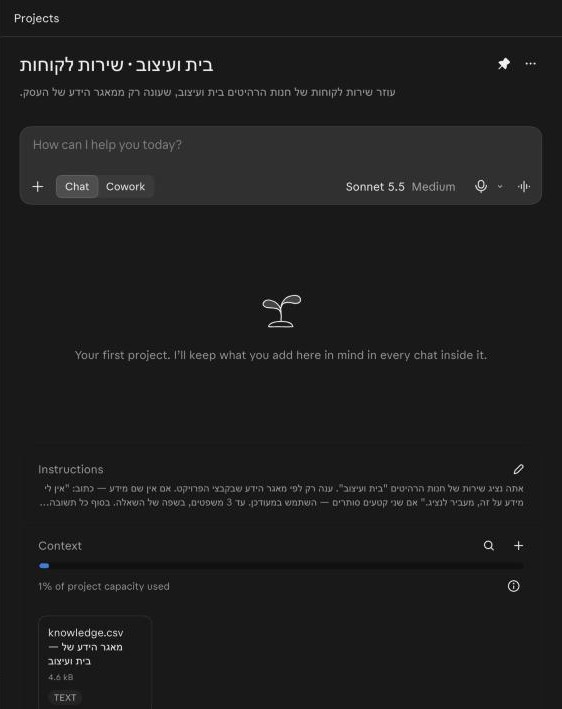
אותן שאלות — בלי לבנות כלום
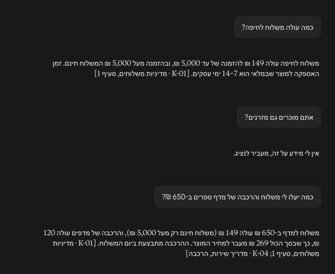
מזרנים — "אין לי מידע על זה, מעביר לנציג." ✅
משלוח והרכבה של מדף — 149 + 120 = 269 ₪, עם שני מקורות ✅
שני נושאים, שפה אחרת
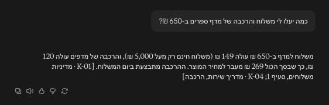

שעות פתיחה: בחר נכון, ובלי המספר המוזר
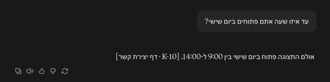
ובכל זאת: מאגר נקי עדיף. לא בונים על זה ש-AI יבחר נכון.
Make או Project — מה למדנו מהבדיקות?
| 🟣 עוזר הידע ב-Make | 🟠 Claude Project | |
|---|---|---|
| שאלה רגילה | ✅ עם מקור | ✅ עם מקור |
| "לא במאגר" | ✅ "מעביר לנציג" | ✅ "מעביר לנציג" |
| שני נושאים בשאלה | ❌ רק אחד | ✅ שניהם |
| שפה אחרת | ✅ מצא, ענה בעברית | ✅ ענה בשפת השאלה |
| לקוח יכול לשאול לבד | ✅ Webhook / Telegram / טופס | ❌ רק אתם, בשיחה |
| עלות | ~6 קרדיטים לשאלה | כלול במנוי |
| זמן בנייה | שעה | 5 דקות |
Plugins: מחברים ו-Skills במקום אחד
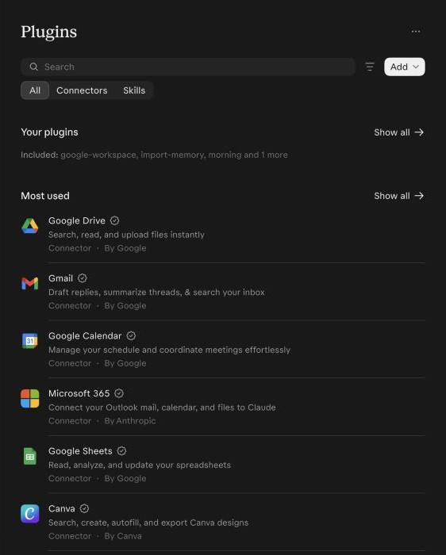
בהגדרות כתוב במפורש: "Skills have moved to Plugins".
Skills: מוכנים, או שיוצרים לבד
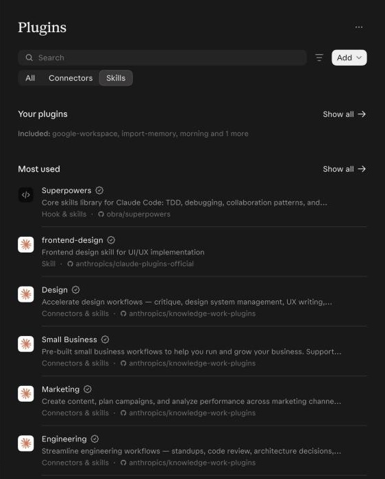
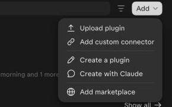
Claude כותב את ה-Skill
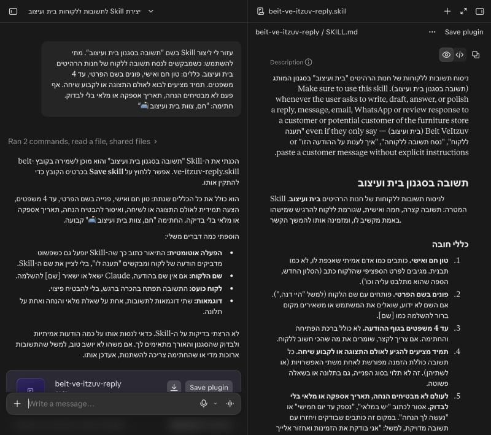
הוא אפילו הוסיף דברים שלא ביקשנו: מה עושים כשאין שם, ולקוח כועס.
שיחה חדשה — וה-Skill נטען לבד
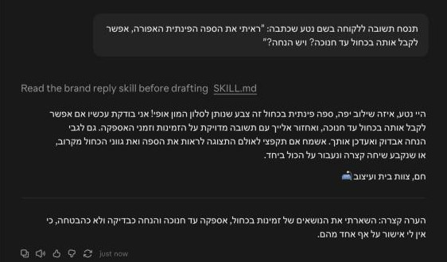
ובסוף — הערה לנו: "השארתי את הנושאים פתוחים… אין לי אישור על אף אחד מהם."
שתי הגדרות שחשוב להכיר
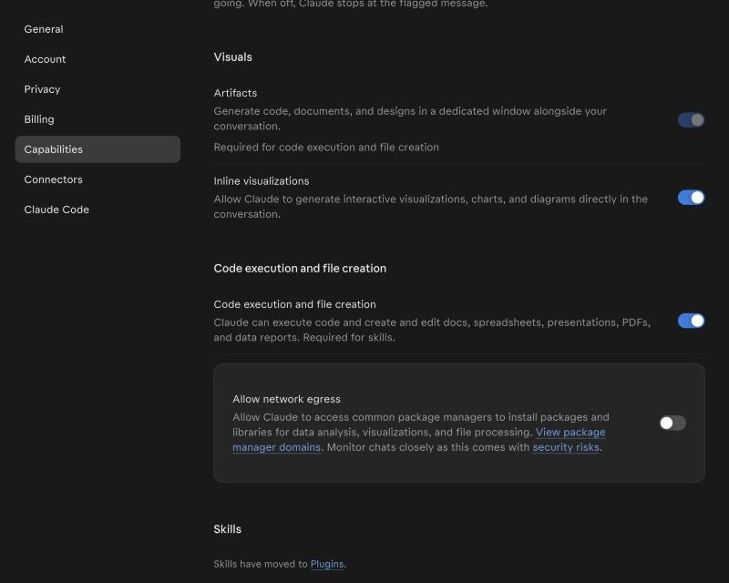
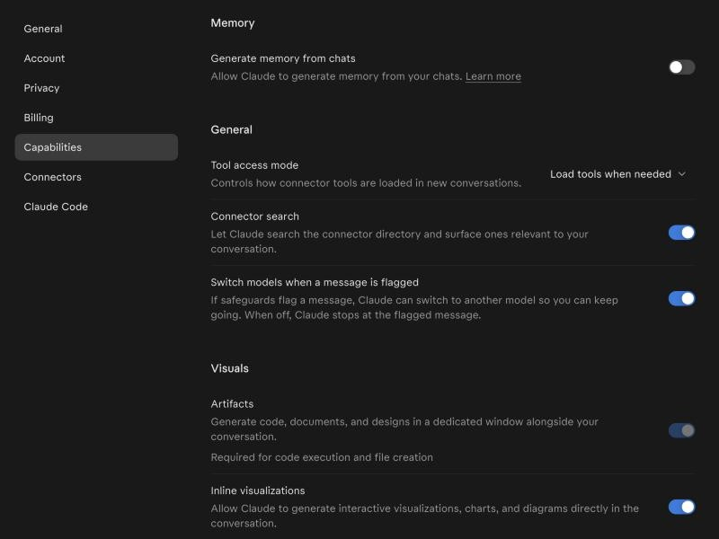
משימות מתוזמנות: Claude עובד גם כשאתם לא
- בסרגל הצד: Scheduled ← New task
- Create with Claude (מתארים במילים) או Set up manually: שם, פרומפט, תדירות (שעתי, יומי, שבועי, ימי חול)
- או בכל שיחה: מבקשים משהו ← לוחצים Schedule
← בדיקת איכות אוטומטית למאגר הידע.
Cowork: Claude שעובד על הקבצים שלכם
Make כמחבר בתוך Claude
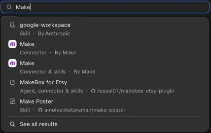
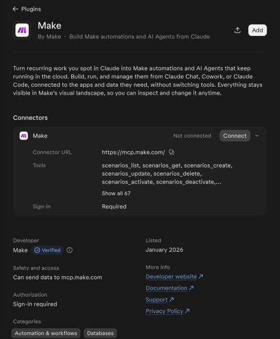
אתם בונים
מייבאים, מנקים, בונים עוזר ידע, ומשווים ל-Claude Project.
התרגילים של היום
| # | תרגיל |
|---|---|
| 1 | 🧹 מייבאים את המאגר ל-Google Sheets ומנקים 4 בעיות |
| 2 | 🔍 בונים את עוזר הידע: 6 מודולים, כמו בהדגמה |
| 3 | 🧪 בודקים: 6 שאלות, כולל "לא במאגר" ושאלה בשפה אחרת |
| 4 | 🤖 הבוט עונה: מחליפים את ה-Webhook ב-Telegram |
| 5 | 📁 Claude Project: אותו מאגר, אותן שאלות — מה ההבדל? |
| 6 | ✍️ Skill: "תשובה בסגנון בית ועיצוב" |
| ⭐ בונוס | Claude מפעיל את תרחיש עוזר הידע דרך מחבר Make |
| 📝 בית | משימה מתוזמנת: בדיקת איכות שבועית למאגר |
בונים בעצמכם
מה לקחנו מהיום
שאלות?
תודה! מהיום — AI שעונה מהידע שלכם, אומר מאיפה, ויודע להגיד "לא יודע".